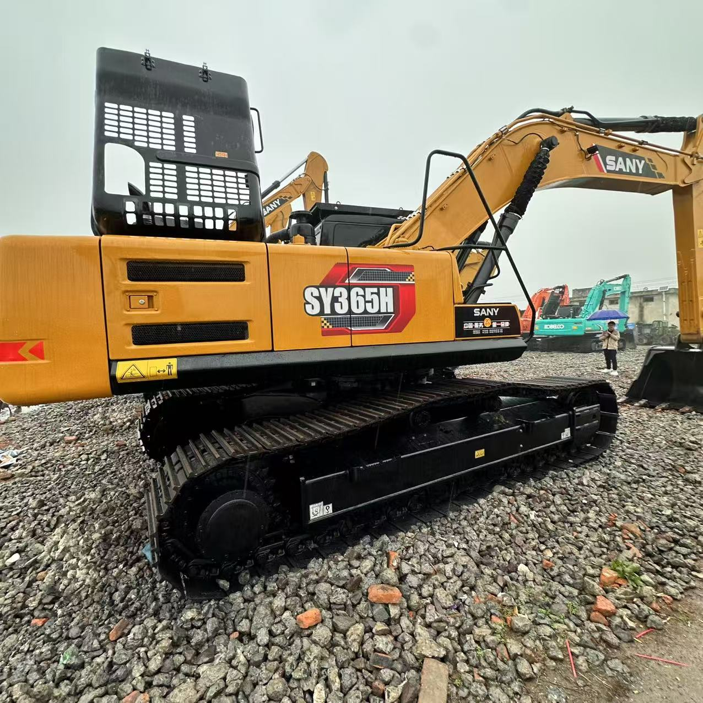

Refurbished SANY SY365 Excavator
The SANY SY365 Excavator is a robust, high-performance machine designed to meet the demands of large-scale construction, mining, and earthmoving operations. Known for its excellent fuel efficiency, powerful hydraulics, and exceptional digging capacity, the SY365 excels in a wide range of tasks, from excavation and material handling to grading and demolition.
Honestly, it's almost impossible to buy a brand new excavator from China. They either don't exist or are made in China. If a Chinese seller tells you their Caterpillar/Komatsu/Volvo/Kobelco/Hitachi is brand new, they're lying. Therefore, a refurbished excavator is your best bet.

Here are the detailed specifications for a refurbished SANY SY365H excavator:
Operating Weight and Dimensions
- Operating Weight: ~39,000 kg
- Transport Length: 11.137 meters
- Transport Width: 3.19 meters
- Transport Height: 3.696 meters
- Track Width: 600 mm standard
- Tail Swing Radius: ~3.8 meters
- Undercarriage: Heavy-duty LC configuration with triple chain guards and double-bearing top rollers
Engine and Powertrain
- Engine Model: Isuzu 6HK1X or SANY-customized Cummins QSL9
- Rated Power Output: 212–235 kW (285–315 hp) @ 2,000 rpm
- Displacement: ~8.9 liters
- Fuel Tank Capacity: ~600 liters
- Travel Speed: ~5.0 km/h
- Swing Speed: ~9.0 rpm
- Gradeability: Up to 70%
- Emission Control: Tier 3 or Stage IIIA (refurbished units often pre-DEF)
Hydraulic System
- Main Pump Type: Electronically controlled axial piston pumps
- Operating Flow: ~2 × 280–300 L/min
- Operating Pressure: Up to 37.3 MPa (5410 psi)
- Hydraulic Oil Capacity: ~500 liters
- Efficiency Features:
- Load-sensing flow distribution
- Regeneration circuits
- Oversized valve cores for reduced pressure loss
- Energy-saving control valves
Performance Metrics
- Bucket Capacity:
- Standard: 1.9 m³
- Optional: 2.2–2.5 m³ heavy-duty bucket
- Max Digging Depth: ~7.5 meters
- Max Reach (Horizontal): ~11.5–12.0 meters
- Max Dump Height: ~7.2–7.5 meters
- Bucket Digging Force: ~235 kN
- Arm Digging Force: ~180–200 kN
Cab and Operator Features
- Cab Type: ROPS/FOPS-certified with reinforced structure
- Display: Intelligent LCD monitor with diagnostics and fuel tracking
- Controls: Pilot-operated joysticks with auxiliary hydraulic circuit
- Comfort: Air-suspension seat, HVAC, noise insulation
- Visibility: Wide glass area, LED work lights, optional 360° camera system
Attachments Compatibility
- Standard Bucket: 1.9 m³
- Optional Tools: Rock breaker, demolition shear, ripper, compactor
- Quick Coupler: Heavy-duty hydraulic coupler
- Bucket Series: Configurable for granite, gravel, and mining conditions
Refurbishment Scope
Refurbished SY365 units typically include:
- Engine Overhaul: Turbocharger, injectors, cooling system
- Hydraulic Restoration: Pump recalibration, valve block testing, hose replacement
- Electrical Diagnostics: Monitor, sensors, wiring harness
- Cab Reconditioning: Seat, joysticks, HVAC, repainting
- Structural Repairs: Boom/bucket welding, bushing replacement, undercarriage rebuild
Overview of the SANY SY365 Excavator
The SANY SY365 is a large, tracked hydraulic excavator designed to tackle demanding tasks with ease. Whether you need to dig trenches, lift heavy materials, or perform grading and leveling, the SY365 is up to the task. Its efficient engine, advanced hydraulic system, and high lifting capacity make it ideal for large-scale construction, mining, and infrastructure projects.
Refurbished models undergo an extensive reconditioning process, ensuring they meet or exceed the original factory standards. Worn parts are replaced with genuine SANY components, restoring the machine to optimal performance. This makes the refurbished SY365 an excellent investment for businesses looking to reduce costs while maintaining top-tier equipment.
Key Specifications of the SANY SY365 Excavator
The SANY SY365 Excavator is engineered for high efficiency, providing the strength and capabilities needed for tough projects. Below are the key specifications that make the SY365 a powerful and reliable choice:
-
Operating Weight: Approximately 36,500 kg (80,500 lbs)
-
Engine Power: 270 hp (202 kW)
-
Max Digging Depth: Up to 7.3 meters (24 feet)
-
Maximum Reach: 10.8 meters (35.4 feet)
-
Bucket Capacity: Typically 1.5 - 2.0 cubic meters (53 - 70.6 cubic feet)
-
Fuel Tank Capacity: Around 400 liters (105 gallons)
-
Travel Speed: Up to 5.5 km/h (3.4 mph)
These specifications give the SY365 the muscle and versatility to handle large excavation jobs, material handling, grading, and even demolition. Its hydraulic system and powerful engine enable it to operate smoothly and efficiently, making it a perfect choice for a variety of heavy-duty tasks.
Performance and Efficiency of the SY365
The SANY SY365 is designed to deliver outstanding performance while maintaining fuel efficiency, ensuring that it provides high productivity without excessive operational costs.
Performance Highlights:
-
Efficient Hydraulic System: The SY365 features a highly efficient hydraulic system that enables smooth and precise operation. The hydraulic components are designed to deliver high power and faster cycle times, resulting in improved productivity and reduced fuel consumption.
-
Fuel Efficiency: One of the standout features of the SY365 is its fuel-efficient engine. It is designed to maximize power output while minimizing fuel consumption, helping businesses reduce fuel costs and improve the overall cost-effectiveness of their operations.
-
High Lifting Capacity: The SY365 offers impressive lifting capabilities, making it ideal for heavy-duty material handling. Whether lifting steel beams, transporting rocks, or moving construction debris, the SY365 handles it all with ease and efficiency.
-
Precision Control: The SY365 provides operators with precise control, allowing them to work in confined spaces or perform intricate tasks with accuracy. Its responsive control system enhances overall performance and contributes to job site safety.
Durability and Longevity of the SY365
SANY equipment is known for its durability, and the SY365 is no exception. Built with high-quality materials and engineered to withstand the toughest conditions, the SY365 provides reliable performance over an extended period.
Durability Features:
-
Reinforced Undercarriage: The SY365 is equipped with a heavy-duty undercarriage designed to handle rough terrain and heavy loads. The durable tracks, rollers, and sprockets ensure smooth operation, even in challenging ground conditions, contributing to the overall longevity of the machine.
-
Reliable Engine: The SY365 is powered by a high-performance engine that is designed to offer long-lasting service. With regular maintenance, the engine can deliver thousands of hours of efficient operation, minimizing downtime and ensuring the machine remains productive for years.
-
Heavy-Duty Hydraulic System: The hydraulic system of the SY365 is engineered to perform under high pressure and demanding conditions. The machine’s hydraulic components are built for durability, ensuring minimal downtime due to system failures and contributing to long-term operational efficiency.
Comfort and Safety of the SY365
The SY365 prioritizes operator comfort and safety, making it ideal for long shifts in challenging environments. With a spacious cabin, ergonomic controls, and advanced safety features, the SY365 provides a comfortable and secure working environment.
Comfort and Safety Features:
-
Spacious and Ergonomic Cabin: The SY365 features an ergonomic cabin designed to reduce operator fatigue. It includes adjustable seating, easy-to-use controls, and excellent visibility, enabling operators to work comfortably for extended periods without experiencing strain.
-
Noise and Vibration Reduction: The cabin is equipped with noise and vibration-reducing features to ensure a quieter, more comfortable working environment. This is especially beneficial during long work hours, helping operators maintain focus and reduce fatigue.
-
Advanced Safety Features: The SY365 comes equipped with Roll Over Protection (ROPS) and Falling Object Protection (FOPS) to ensure the safety of the operator. Additionally, the machine’s low center of gravity enhances its stability, reducing the risk of tipping on uneven terrain.
Versatility and Attachments for the SY365
The SANY SY365 is a highly versatile machine, capable of performing a wide range of tasks with the right attachments. Whether it’s digging, grading, lifting, or demolition, the SY365 can be fitted with various attachments to meet specific job requirements.
Common Attachments for the SY365:
-
Buckets: The SY365 can be equipped with various types of buckets, including general-purpose, heavy-duty, and grading buckets. These typically range from 1.5 to 2.0 cubic meters (53 - 70.6 cubic feet), allowing for efficient material handling and excavation tasks.
-
Hydraulic Breakers: The SY365 can be fitted with hydraulic breakers, making it suitable for demolition work. These attachments allow the machine to break through concrete, rock, and other tough materials efficiently.
-
Augers: Auger attachments are ideal for drilling precise holes for foundations, posts, or other applications requiring depth and precision.
-
Grapples: Grapple attachments are perfect for material handling, allowing the SY365 to lift and move large materials such as logs, debris, and scrap metal.
-
Quick Couplers: Quick couplers allow for the fast and easy switching of attachments, improving productivity and reducing downtime on the job site.
Benefits of Purchasing a Refurbished SANY SY365 Excavator
Choosing a refurbished SANY SY365 Excavator offers several advantages, particularly for businesses that need high-performance equipment at a lower cost.
Key Benefits:
-
Cost Savings: Refurbished SANY SY365 units offer significant cost savings compared to new machines, providing the same level of performance and reliability at a fraction of the price.
-
Comprehensive Reconditioning: Refurbished models undergo an extensive reconditioning process to restore them to like-new condition. Worn parts are replaced with genuine SANY components, ensuring optimal performance and reliability.
-
Warranty: Many refurbished SANY SY365 Excavators come with a warranty, giving buyers peace of mind and protection against unexpected issues.
-
Sustainability: Purchasing refurbished equipment is an environmentally friendly choice, helping to reduce waste and extend the life of existing machinery.
Maintenance Tips for the SANY SY365 Excavator
To ensure the SANY SY365 continues to perform at its best, regular maintenance is essential. Below are some key maintenance tips:
Maintenance Recommendations:
-
Engine Maintenance: Regularly check and change the engine oil, replace air filters, and monitor coolant levels to ensure optimal engine performance and prevent overheating.
-
Hydraulic System: Inspect hydraulic hoses for leaks and replace hydraulic filters when necessary. Keeping the hydraulic system clean and well-maintained ensures smooth operation and long-term efficiency.
-
Undercarriage: Inspect the undercarriage regularly, including tracks, sprockets, and rollers, for signs of wear. Timely replacement of damaged components can prevent further damage and ensure smooth operation.
-
Attachments: Regularly inspect attachments, such as buckets and hydraulic breakers, for wear and tear. Repair or replace damaged parts to maintain attachment functionality and reduce downtime.
Conclusion
The SANY SY365 Excavator is a powerful, durable, and versatile machine designed for large-scale construction, mining, and earthmoving projects. With its high performance, fuel efficiency, and operator comfort, the SY365 is an excellent choice for businesses seeking reliable and cost-effective equipment. Purchasing a refurbished SY365 offers significant savings while maintaining excellent performance and longevity. With proper maintenance, the SY365 will continue to deliver top-tier performance for years to come, providing great value and productivity for your projects.
Our Commitment
- 2 years / 4000 hours warranty.
- EPA certified.
- No sweatshop labor.
Contacts

- [email protected]
- Youtube Instagram Facebook
- Navigation: G206 (Sishu Bridge) in Changfeng County, Hefei City, Anhui Province, 200 meters north to the east